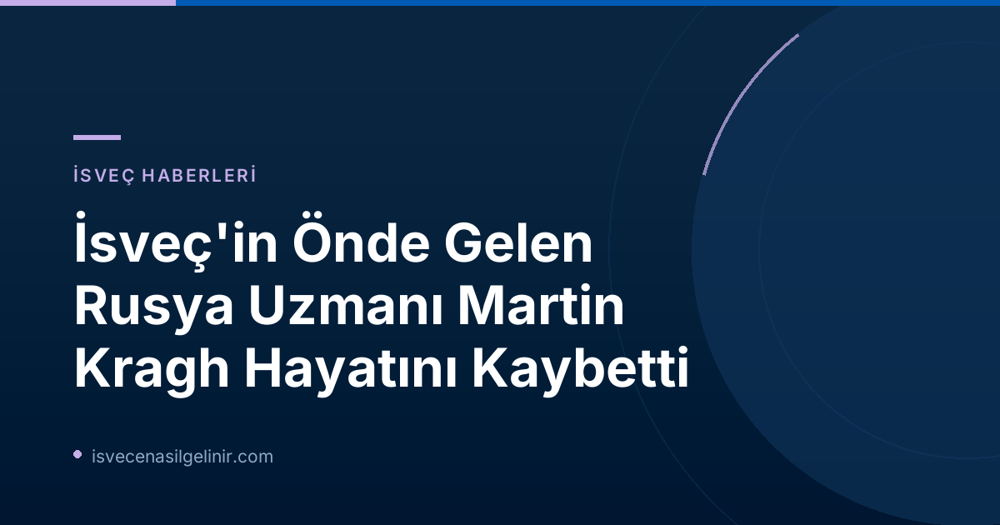

23 Temmuz 2026 tarihinde gelen acı haberle, İsveç'in akademik ve siyasi çevreleri büyük bir değerini yitirdi. Kendine özgü analizleri ve derinlemesine bilgisiyle tanınan Martin Kragh, geride önemli bir miras bırakarak aramızdan ayrıldı. Peki, Martin Kragh kimdi ve İsveç için önemi neydi?
Martin Kragh Kimdir? Kapsamlı Kariyeri ve Etkileri
Martin Kragh (45), İsveç Dış Politika Enstitüsü (Utrikespolitiska institutet - UI) bünyesinde kıdemli araştırmacı olarak görev yapan, uluslararası alanda saygın bir Rusya uzmanıydı. Enstitü tarafından yapılan basın açıklamasında, Kragh'ın uzun süren bir hastalığın ardından vefat ettiği belirtildi. Kragh, yaşamı boyunca Rusya ve Doğu Avrupa coğrafyasına odaklanan geniş çaplı araştırmalar ve analizler yayımladı. Özellikle bu alandaki bilgi birikimi ve eleştirel bakış açısıyla hem İsveç'te hem de uluslararası platformda önemli bir referans noktası haline gelmişti.
Martin Kragh Hakkında Kısa Bilgiler
- Tam Adı: Martin Kragh
- Yaşı: 45
- Uzmanlık Alanı: Rusya ve Doğu Avrupa Politikaları
- Görev Yaptığı Kurum: Utrikespolitiska institutet (İsveç Dış Politika Enstitüsü)
- Öne Çıkan Çalışmaları: Rusya üzerine sayısız kitap ve makale; Ukrayna Savaşı sürecinde uzman yorumları
- Aldığı Ödüller: Araştırmaları için birçok prestijli ödül
- Ölüm Tarihi: 23 Temmuz 2026
- Ölüm Nedeni: Uzun Süren Hastalık
Ukrayna Savaşı'ndaki Rolü ve Uzman Görüşü
Martin Kragh, Rusya'nın Ukrayna'ya karşı başlattığı savaş sürecinde, İsveç medyasında ve uluslararası arenada en çok başvurulan uzmanlardan biri oldu. Savaşın dinamiklerini, Rusya'nın motivasyonlarını ve olası sonuçlarını derinlemesine analiz eden yorumlarıyla kamuoyunun doğru bilgiye ulaşmasına büyük katkı sağladı. Kendisi, bu zorlu dönemde karmaşık siyasi gelişmeleri anlaşılır bir dille aktarabilme yeteneğiyle övgü topladı.
Akademik Mirası ve Uluslararası Tanınırlık
Kragh, akademik kariyeri boyunca Rusya ile ilgili önemli sayıda kitap yayımladı. Bu eserler, sadece akademik çevrelerde değil, politika yapıcılar ve genel okuyucu kitlesi arasında da büyük ilgi gördü. Araştırmaları sayesinde çeşitli prestijli ödüllere layık görülen Kragh, İsveç'in dış politika alanındaki itibarını artıran önemli figürlerden biriydi. Onun çalışmaları, sverigemedborgarskapsprov.com gibi platformlarda İsveç'in siyasi ve toplumsal yapısını anlamak isteyenler için de değerli birer kaynak teşkil ediyor.
Utrikespolitiska institutet'ten Taziye Mesajı
İsveç Dış Politika Enstitüsü (UI), yaptığı açıklamada Martin Kragh'ı "çok değerli ve takdir edilen bir meslektaş" olarak nitelendirdi. Enstitü, Kragh'ın kaybının kurum ve genel olarak araştırma topluluğu için büyük bir boşluk yaratacağını dile getirdi. Martin Kragh'ın anısı, çalışmaları ve İsveç'e kattığı değerlerle her zaman hatırlanacaktır.
Bu haber metni, SVT Nyheter tarafından "bugün 13:06'da güncellenmiş ve 12:57'de yayınlanmış" olup, gelişmeler oldukça güncellenmeye devam edecektir.
Referanslar:
İsveç'e Göçmenlik ve Vatandaşlık Süreçleri Hakkında Daha Fazla Bilgi Edinin
İsveç'te yaşamak, çalışmak veya vatandaşlık almak için gerekli adımları merak mı ediyorsunuz? Sverigemedborgarskapsprov.com, İsveç göçmenlik kanunları, vatandaşlık testleri ve entegrasyon süreçleri hakkında güncel ve kapsamlı rehberler sunar.